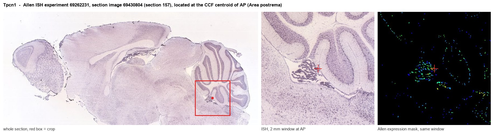
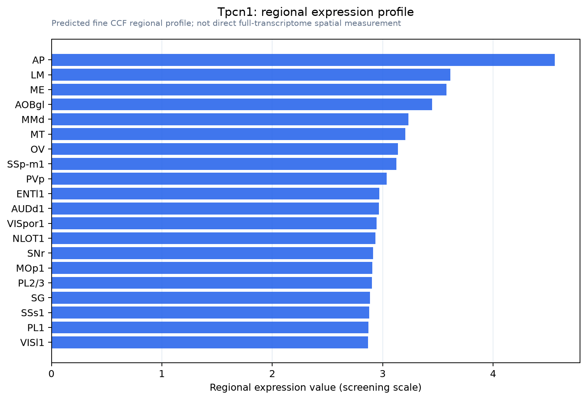

Tpcn1
Two pore calcium channel protein 1 (Voltage-dependent calcium channel protein TPC1)
Spatial tier: REGION_BIASED · Class: ION_CHANNEL · Top region: AP (Area postrema) · Positive regions: 29/554
42.0Discovery Score
39.9Targetability Score
CEvidence grade C
What this means: Tpcn1: fine CCF profile is region-biased toward AP (top regions: AP, LM, ME, AOBgl, MMd); this is a discovery lead, not direct proof.
Function in AP: evidence, prediction, innovation
- Gene function
- Tpcn1 encodes two-pore channel 1, a Na+- and Ca2+-permeable channel of endosomal and lysosomal membranes. It is gated by PI(3,5)P2, modulated by NAADP via accessory NAADP-binding proteins, and regulated by mTOR with nutrient state. TPC1 shapes endolysosomal Ca2+ release, vesicle fusion, receptor recycling and autophagic flux.
- Region function
- The area postrema is a circumventricular organ in the dorsal medulla whose fenestrated capillaries let it sample blood-borne GDF15, amylin, GLP-1 and toxins. Its excitatory neurons project to the NTS and parabrachial nucleus to drive nausea, emesis, conditioned taste aversion and anorexia.
- Published in this region
- none No region-specific literature found. Mallmann and Klugbauer 2020 detected TPC1 protein broadly in mouse neocortex, cerebellum and hippocampus and found spatial learning deficits in Tpcn1-/- mice; Martucci et al. 2023 showed endolysosomal TPCs control oxytocin secretion from hypothalamic neurons.
- Predicted function
- Prediction: AP neurons are peptidergic and catecholaminergic and depend on dense-core vesicle trafficking and rapid recycling of GFRAL, CALCR and GLP1R after ligand exposure, so Tpcn1 most plausibly sets the gain of that vesicular Ca2+ signalling. Tpcn1 deletion or trans-Ned-19 should leave baseline feeding intact but blunt and shorten GDF15-, amylin- or LiCl-evoked taste aversion and anorexia, and slow tachyphylaxis to repeated GLP-1 receptor agonist dosing.
- Innovation
- ★★★★★ 5/5 Endolysosomal two-pore channels have never been examined in the AP despite demonstrated control of hypothalamic neuropeptide secretion and the AP's role in incretin-drug side effects.
- Tools
- Tpcn1-/- and Tpcn1/Tpcn2 double-knockout mice (Klugbauer lab); NAADP antagonist trans-Ned-19; TPC blocker tetrandrine; PI(3,5)P2 and NAADP-AM activators; lysosome-targeted Ca2+ sensors; anti-TPC1 antibodies. No Cre driver.
- References
Direct evidence located at the region

Allen ISH experiment 69262231, section image 69430804 (section 157): the section that contains the CCF centroid of Area postrema according to the Allen image-to-atlas alignment (reference_to_image), with a 2 mm window around that point. Left: whole section, red box = window. Middle: ISH signal. Right: Allen's expression-mask view of the same window. open this image in the Allen viewer
Look it up yourself: Allen Mouse Brain ISH for Tpcn1Allen reference atlas: AP (structure 207)ABC Atlas MERFISH viewer(in the ABC Atlas choose dataset MERFISH-C57BL6J-638850-CCF, colour cells by gene "Tpcn1" or by parcellation_substructure "AP")All genes confined to AP + 3-D brain
Direct spatial evidence
MERFISH REGION LOCATOR

Regional expression figure

Predicted WMB × fine-CCF profile; not direct full-transcriptome spatial measurement.
Spatial profile
Evidence and specificity
- Evidence status
- PREDICTED_FINE
- Direct sources
- None; predicted localization only
- Exclusive threshold
- 12 positive regions out of 554
- Spatial specificity
- 0.288
- Top-region fraction
- 0.057
- Filter status
- PASS
Interpretation limits
- Cell-type-to-region projection is imputed expression, not direct spatial measurement.
- Adult reference atlases do not establish stability across age, sex, strain, state, or disease.
- Transcript abundance does not guarantee protein abundance or genetic-tool performance.